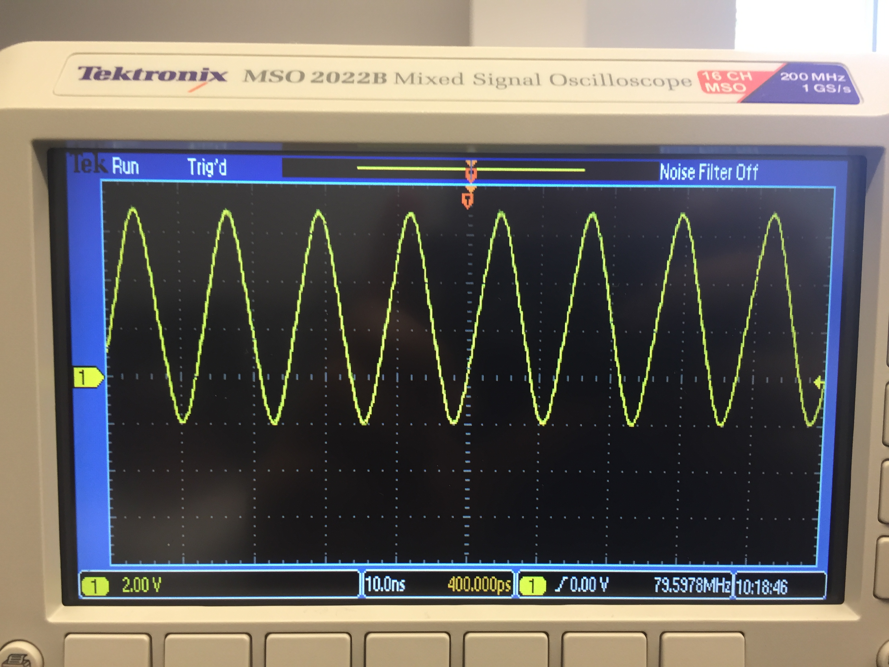

Table 3: The logic for the JK flip
flop is shown below.
The JK flip flop toggling did not
function as expected. One possible reason for this unexpected behavior
was that two-three input NAND gates were used at the stage that required two-two input NAND gates. The following was the toggling figure attained from the oscillosocpe:

Figure 2: The toggling behavior for the JK flip flop is shown above.